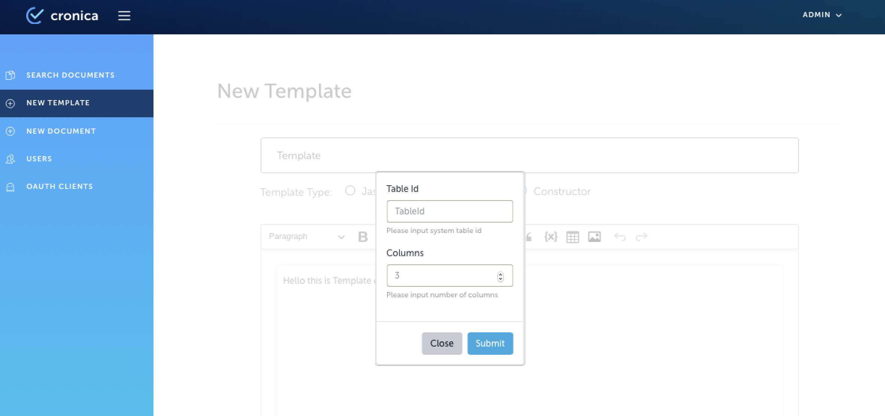
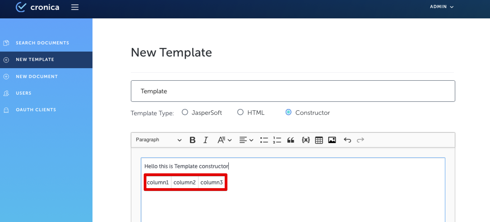
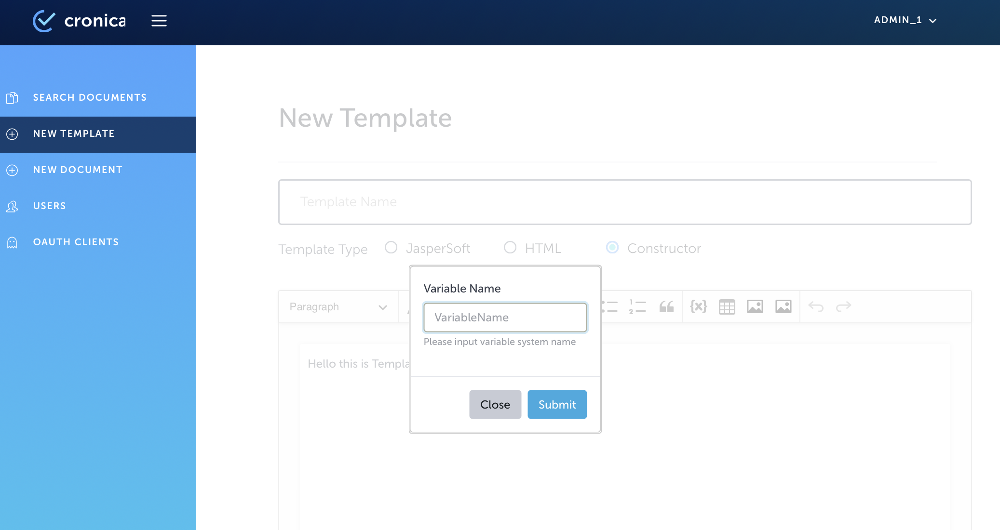
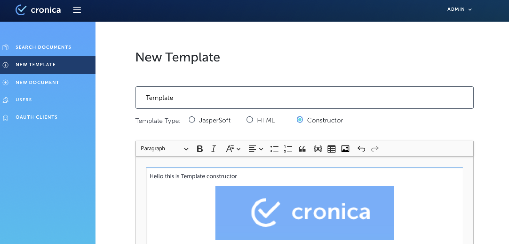
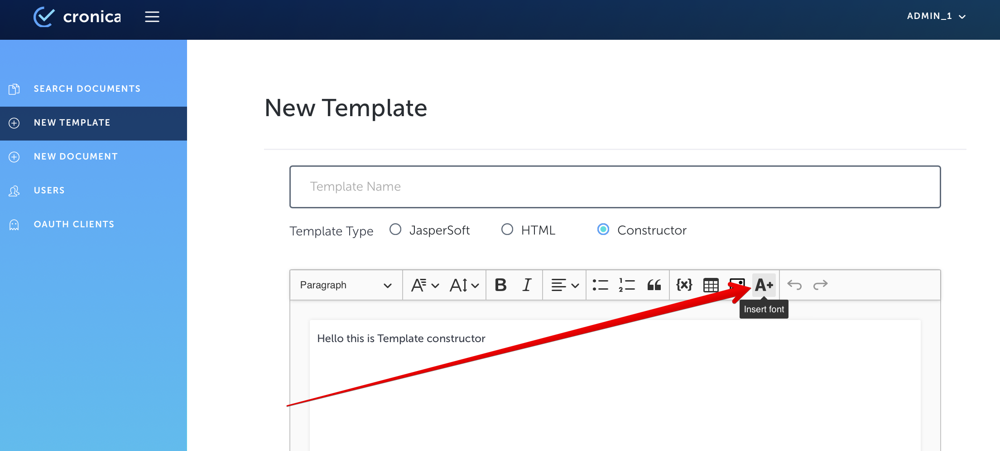
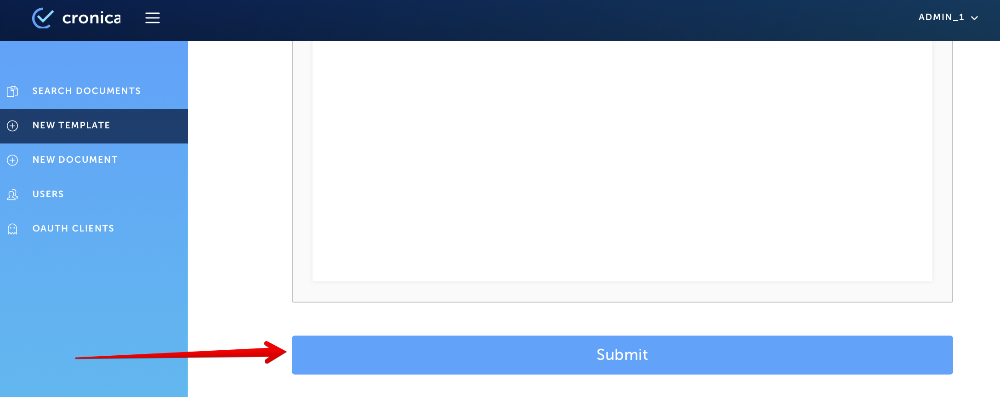
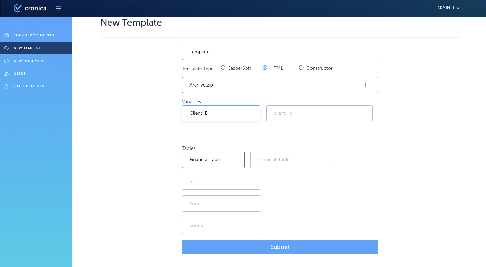

Step-by-step guide
1. Go to the Issuer site of Cronica.io and authorize as an Editor or Administrator
2. Go to the New Template
3. Input Template Name
4. Click on Constructor button
5. Compose a new template using available tools of Template Constructor
6. If you need to add a table to your template, follow next few steps:
a. Click on 'Table' icon in the tool bar

b. State Table ID to 'TableID'
с. Set number of columns Table ID to 'Columns'

d. Observe table and a columns within template block
e. Input columns names into appropriate columns

f. Table with stated columns will be added to the template
7. If you need to add an input field to your template, follow next few steps:
a. Click on 'Variable' icon in the tool bar

b. Input Variable (field) name to 'Variable Name' field
c. Click on 'Submit' button

d. Observe as newly added variable appears within the template

f. Table with stated columns will be added to the template
8. If you need to add a image to your template, follow next few steps:
a. Click on 'Image' icon in the tool bar

b. Observe 'Select image' popup window
с. Click on '+' button and attach needed image
d. Click on 'Submit' button

e. Observe image within template block

9. If you need to use custom fonts within your template, follow next few steps:
a. Click on 'Insert font' icon in the tool bar

b. Observe 'Select font' popup window
с. Click on '+' button and attach needed image
d. Click on 'Submit' button

e. Click on ‘Fonts’ icon and select newly uploaded font from a dropdown menu
.png)
f. Type need text using selected font
10. Click on ‘Submit’ button, when all the changes to the template are finished

11. Observe block with variable and table name(s)

11. Complete Variable Name fields (f.e. “Client ID”)
12. Complete Table Name fields (f.e. “Financial Table”)
13. If your template has more than one table, complete Table Name field for each table
14. Check all the fields are correctly completed and click on Submit to submit new template
15. Observe newly added template in documents list in New Document menu